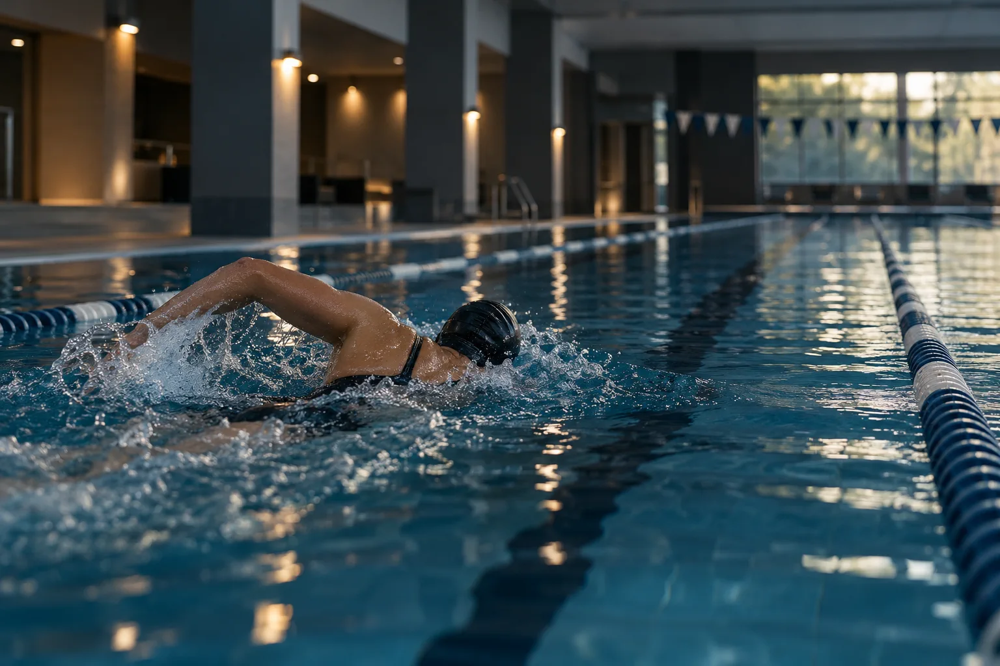
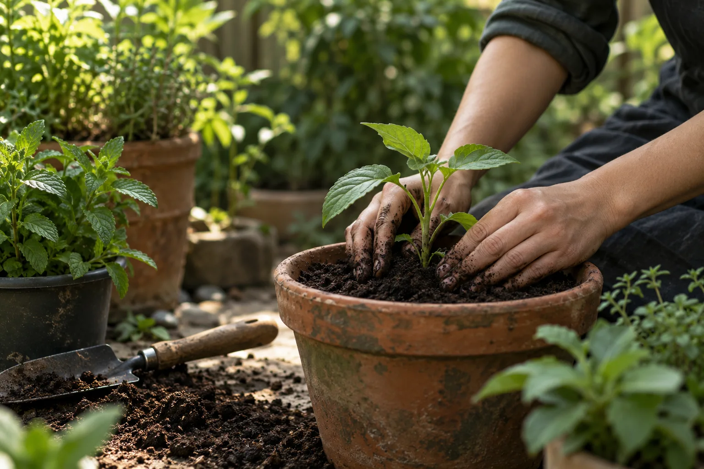
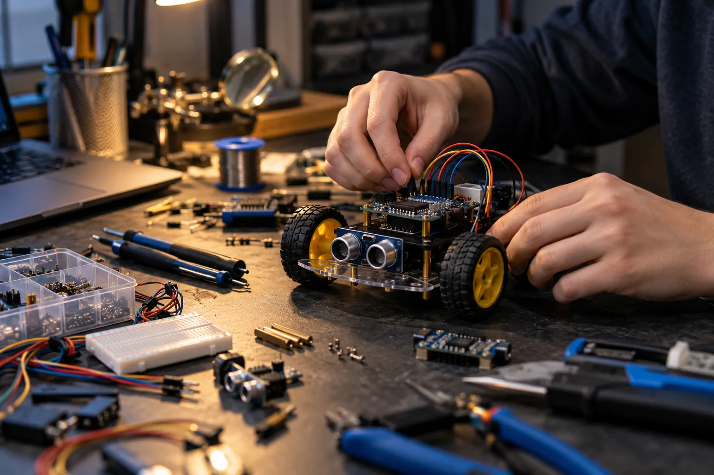
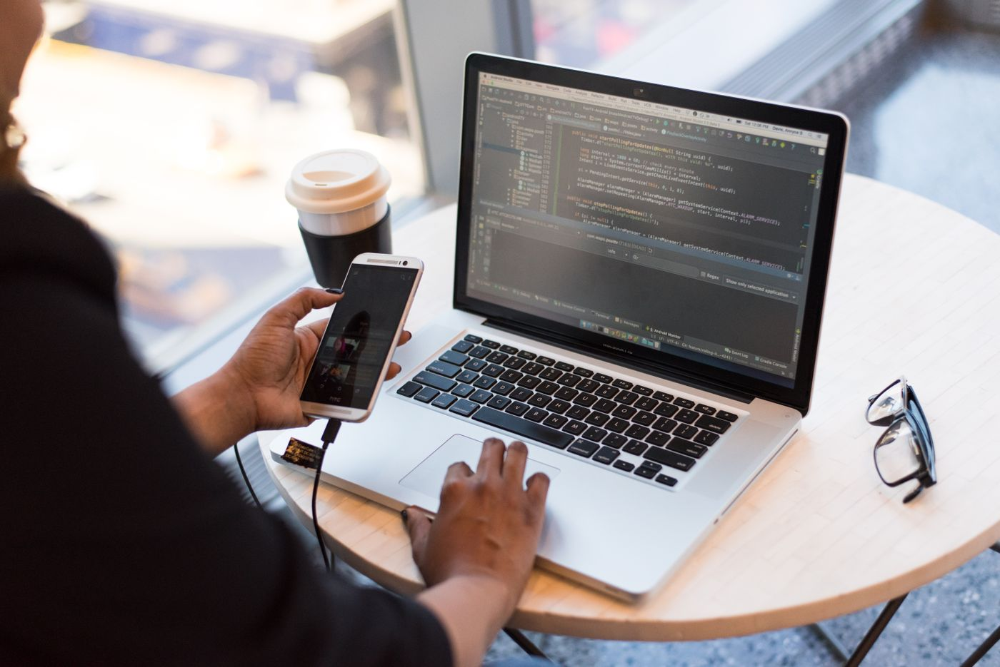
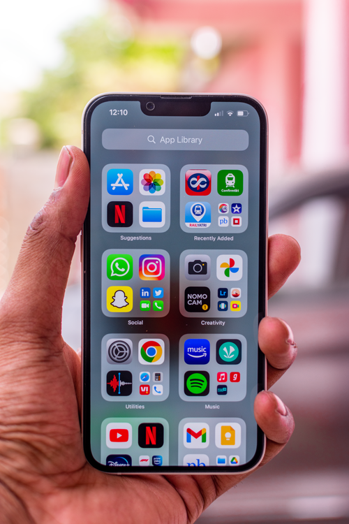

Renang
Melatih disiplin dan konsistensi, kebiasaan yang membantu saya tekun belajar dan menuntaskan proyek.
Mahasiswa Teknik Informatika yang belajar membangun aplikasi mobile.
Saya mengembangkan kemampuan melalui Flutter, Dart, Android, dan eksplorasi antarmuka yang mudah digunakan.
Flutter Dart Android UI/UX
Lihat perjalanan belajarHal yang senang saya eksplorasi dalam dunia pengembangan aplikasi mobile.

Melatih disiplin dan konsistensi, kebiasaan yang membantu saya tekun belajar dan menuntaskan proyek.
Mengasah logika dan perencanaan langkah, kemampuan yang berguna saat merancang solusi dan mencari bug.
Melatih komunikasi dan keputusan cepat, bekal yang relevan saat berkolaborasi membangun aplikasi.
Membiasakan saya merencanakan rute dan beradaptasi saat kondisi berubah, seperti menghadapi tantangan proyek.

Mengajarkan kesabaran merawat proses sedikit demi sedikit, seperti mengembangkan fitur, menguji, lalu memperbaikinya.

Menghubungkan kode dengan perangkat nyata dan melatih pemahaman logika sistem serta integrasi perangkat lunak dan keras.
Belajar merancang antarmuka, menulis kode, menguji aplikasi, lalu memperbaiki hal yang belum berjalan baik.
Flutter membantu saya merancang antarmuka lintas platform. Saya mempelajari widget, layout, navigasi, dan state management agar aplikasi konsisten serta mudah dirawat.
Saya mempelajari Android SDK, Kotlin, lifecycle, permission, dan proses build untuk memahami bagaimana aplikasi berjalan pada perangkat nyata.
Ruang layar ponsel terbatas. Saya berlatih menyusun navigasi dan hierarki informasi yang tetap mudah dipahami pada berbagai ukuran perangkat.

Saya menelusuri log, memeriksa state, dan menguji alur layar di emulator maupun perangkat fisik sebelum memperbaiki bug yang ditemukan.

Saya membiasakan perubahan kecil dengan Git, menjaga kode tetap terbaca, dan mengevaluasi fitur secara bertahap agar proses pengembangan terus terarah.
Sekilas tentang proses coding, eksplorasi antarmuka, pengujian, dan rutinitas pengembangan aplikasi mobile.
Gunakan tombol panah atau indikator untuk menjelajahi galeri.
Semester Ganjil 2026/2027 · 9 mata kuliah
Waktu Indonesia Barat (WIB)
Ruang H.3.8
Ruang H.4.1
Ruang H.4.9
Ruang H.7.1
Ruang H.5.10
Kulino
Ruang H.7.1
Ruang H.3.1
Kulino
Waktu untuk belajar mandiri dan kegiatan pribadi.
Waktu untuk beristirahat dan bersiap untuk minggu baru.
Mahasiswa Teknik Informatika
| NIM | A11.2025.16442 |
|---|---|
| Program studi | Teknik Informatika |
| 111202516442@mhs.dinus.ac.id | |
| Telepon | +628970531600 |
| Alamat | Bacin, Bae, Kudus |